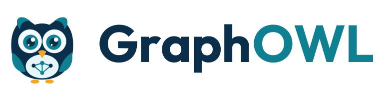

Engine
A triple store with time travel, constraint validation, reasoning and graph query. Every fact keeps its history: nothing is deleted, only retracted.

GraphOWL stores, queries, reasons over and validates connected knowledge — from your databases, documents and systems. History, rules and validation are part of the engine, not added on top of it.
Request demo access See the console

Three layers, one product. The engine is the foundation; the catalog and the context layer sit on top of it.
A triple store with time travel, constraint validation, reasoning and graph query. Every fact keeps its history: nothing is deleted, only retracted.
Ontologies, glossaries, rules and expectations kept in the graph itself and reviewed before they take effect. A data catalog, a compliance model or a product domain is one pack on the same engine.
Ways for people and agents to use the graph: an MCP server, semantic search and APIs.
The server is written in Rust, as a workspace of small, single-purpose crates. What that means for what you run:
Memory safety without a garbage collector: whole classes of crashes and security flaws cannot be written in safe code, and there are no collector pauses to show up as latency spikes.
The server, the API and the console ship as a single program. There is no runtime or virtual machine to install, and few moving parts to operate.
A fact has a source, a derived fact is marked derived, a model change needs review. These are encoded in types, so breaking them is a compile error, not a surprise in production.
No benchmark figures are claimed yet; they will be published with the method that produced them.
A synthetic cooperative, so there is no real data in it. Its source database holds farms, milk lots, quality tests, production batches and retail sales.
The source database is read through a read-only role, so nothing in the console can change it.
The live demo is password-protected while GraphOWL is in early access. Email connect@graphowl.app and you will be sent a login for demo.graphowl.app.